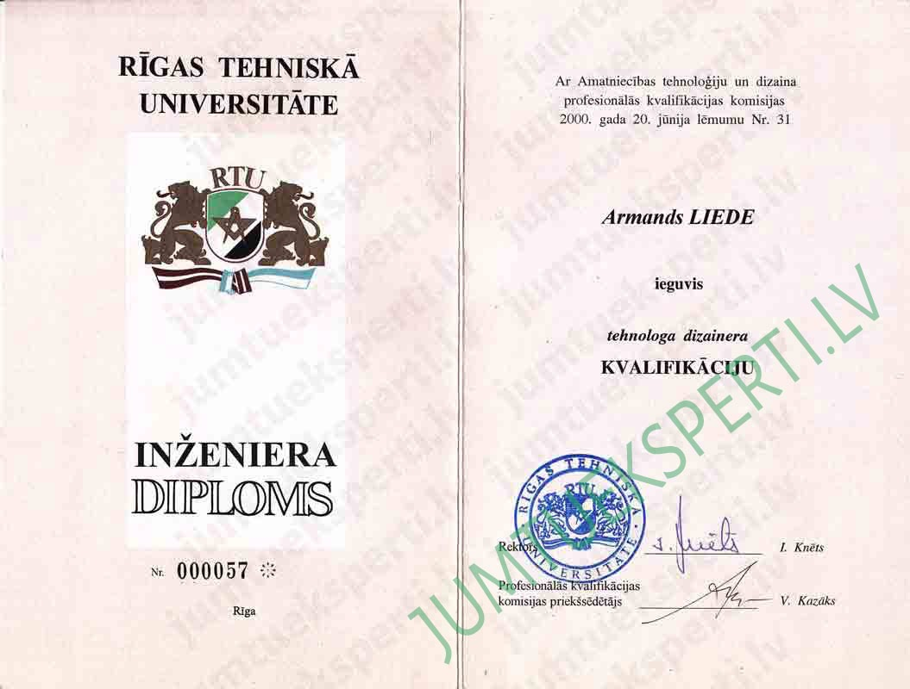

Profesionālā kvalifikācija
Jumiķa amata meistara diploms
Latvijas Amatniecības kameras jumiķa amata meistara diploms Nr. 3928, 1996.
Apskatīt dokumentuKvalifikācija
Izglītība, profesionālā kvalifikācija un publiski pārbaudāms būvspeciālista sertifikāts.

Dokumenti
Būvspeciālista sertifikāta derīgumu var pārbaudīt Būvniecības informācijas sistēmas publiskajā reģistrā.
Latvijas Amatniecības kameras jumiķa amata meistara diploms Nr. 3928, 1996.
Apskatīt dokumentuAmatniecības tehnoloģiju un dizaina inženiera grāds, Rīgas Tehniskā universitāte.
Apskatīt dokumentuSfēra: jumiķis. Izsniedza Latvijas Amatniecības kamera, derīgs līdz 05.06.2029. Pārbaudei reģistrā meklējiet pēc sertifikāta numura.
Pārbaudīt BIS reģistrāNozares organizācijas
Valdes loceklis, ilggadējs valdes priekšsēdētājs. 1995. gadā viens no Latvijas Jumiķu biedrības dibinātājiem un tās pirmais priekšsēdētājs.
Valdes loceklis kopš 2016. gada, atbildīgs par ilgtspējīgas būvniecības politiku, kontaktpersona Austrumeiropas valstīm.
Izvēlieties pakalpojumu un īsi aprakstiet situāciju. Sazināsimies par nākamo soli.